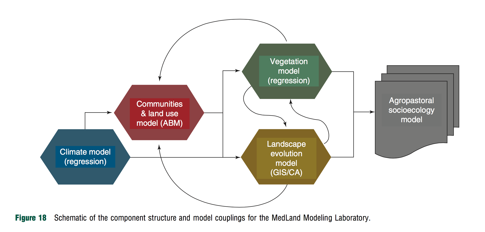

Agent-Based Modeling
Helena Mitasova, Anna Petrasova, Vaclav Petras
GIS714 Geosimulations NCSU
Learning objectives
- principles of agent-based modeling
- simulation examples
- software platforms and tools
- simulating coupled human and natural systems
Agent-Based Modeling
- evolved from cellular automata, game of life
- introduces agent acting within an environment
- agents move through space and across time while interacting with the environment and with each other
- in geospatial applications ABM simulates behavior of intelligent agents within a geographic space
ABM principle
General expression for the agent $A_i$ evolution
$$ A_i^{t+\Delta t} = F(A_i^t, A_j^t, E^t, R) $$
Agent state (location, attributes) at time $t+\Delta t$ is a function of
- its state at time $t$,
- state of the interacting agent(s) $A_j^t$
- state of the environment $E$
- interaction rules $R$
ABM space and agents
Space is often tesselated into grid cells with initial environmental state.
Agents are modeled as grid cells, patches, points or oriented lines


Compare CA and ABM
- in CA environment is equivalent to population
- ABM treats agents (population) and environment as separate interacting entities
- in CA the evolution depends only on the state of the cell neighborhood
- in ABM the evolution depends on the environment and interaction between agents
- in ABM the interactions can be long range
There is a continuum of models between CA and ABM. Some models can be interpreted as special cases of solutions to processes described by partial differential equations
Agents and their interaction
- agents are autonomous interacting units
- active features of agents (Crooks et al. 2012):
- pro-active, reactive, bounded rationality
- interaction with other agents and the environment
- mobile or stationary
- adaptation and learning
- population of agents can be heterogeneous
Emergence and self-organization
Applies to both CA and ABM
- Emergent behavior: behavior of the modeled system is more complex than the behavior of the parts (recall Puffer breeder CA)
- synchronization, cooperation or chaos, turbulence
- self-organization: feedback and adaptive behavior
- behavior of a component depends on the behavior of the system
{kind=link}
Agent based modeling environments
- MESA: ABM in python 3+
- NetLogo and NetLogoWeb
- REPAST, screenshots with GIS Integration
- MASON: Multi-agent Simulation Toolkit
- GAMA platform with a new model for Covid-19 modeling
- ABM at geosimulation labs
- CoMSES/OpenABM: collection of resources for computational model-based science
- GRASS GIS ABM library
ABM examples
Schelling's segregation model in NetLogoWeb
- Two groups in randomly distributed patches
- Agent is happy if it has $n%$ neighbors from the same group
- Unhappy agent moves until it finds happy location
- System segregates into more homogeneus groups even for $n$ less than 50%
Hatna and Benenson, 2012, The Schelling Model of Ethnic Residential Dynamics: Beyond the Integrated - Segregated Dichotomy of Patterns, JASSS 15(1)6, real-world application.
ABM examples
Schelling's segregation model in NetLogoWeb
30% similar wanted
Wilensky, U. (1997). NetLogo Segregation model. Center for Connected Learning and Computer-Based Modeling, Northwestern University, Evanston, IL.
Hatna and Benenson, 2012, The Schelling Model of Ethnic Residential Dynamics: Beyond the Integrated - Segregated Dichotomy of Patterns, JASSS 15(1)6, real-world application.
ABM examples
Schelling's segregation model in NetLogoWeb
30% similar wanted
Wilensky, U. (1997). NetLogo Segregation model. Center for Connected Learning and Computer-Based Modeling, Northwestern University, Evanston, IL.
Hatna and Benenson, 2012, The Schelling Model of Ethnic Residential Dynamics: Beyond the Integrated - Segregated Dichotomy of Patterns, JASSS 15(1)6, real-world application.
ABM examples
Schelling's segregation model in NetLogoWeb
50% similar wanted
Wilensky, U. (1997). NetLogo Segregation model. Center for Connected Learning and Computer-Based Modeling, Northwestern University, Evanston, IL.
Hatna and Benenson, 2012, The Schelling Model of Ethnic Residential Dynamics: Beyond the Integrated - Segregated Dichotomy of Patterns, JASSS 15(1)6, real-world application.
ABM examples
Schelling's segregation model in NetLogoWeb
50% similar wanted
Wilensky, U. (1997). NetLogo Segregation model. Center for Connected Learning and Computer-Based Modeling, Northwestern University, Evanston, IL.
Hatna and Benenson, 2012, The Schelling Model of Ethnic Residential Dynamics: Beyond the Integrated - Segregated Dichotomy of Patterns, JASSS 15(1)6, real-world application.
ABM examples
Explore your scenarios in Schelling's segregation model in NetLogoWebCompare n = 20,30,45 %, also try to start with 25% empty and 60% neighbors
Read the model description to understand the model set up and behavior, check out the code to see how it is implemented
ABM examples

Learn more in the NetLogo Model Description Tab
ABM examples

Learn more in the NetLogo Model Description Tab
ABM examples

Learn more in the NetLogo Model Description Tab
ABM examples

Learn more in the NetLogo Model Description Tab
ABM examples

Learn more in the NetLogo Model Description Tab
ABM examples

see also Epidemic model with travel
Coupling human and natural systems
- natural systems component: process-based simulations
- human components: ABM
Robinson et al. 2018, Modelling feedbacks between human and natural processes in the land system, two (out of four) use ABM to model the human component
- MedLanD (ABM+CA+process-based): spread of agriculture in Neolithic societies
- BIOME-BGC+DEED (Dynamic Global Vegetation Model + Dynamic Ecological Exurban Development)
Coupling human and natural systems
MedLanD simulates long-term change in socioecological systems: prehistoric Mediterranean societies
- evolution of landscape: process-based erosion and deposition modeling
- land use change driven by agropastoral practicies:
- stochastic, rule-based model
or
- agent (farming household) driven land use change
- stochastic, rule-based model
Neolithic farming spread ABM
Agents employ decision rules to covert land to farming or grazing based on:
- their farming returns (affect birth and death rate)
- needs (based on household size),
- the potential productivity of land (soil depth and fertility, slope, current vegetation),
- costs to use the land (including access on foot)
- randomized access to the best available land patches
Agents initial state and rules are based on archeological record.
Mayer G, Hessam S, (2007) Complexities of Simulating a Hybrid Agent-Landscape Model Using Multi-Formalism Composability, Agent-Directed Simulation, Spring Simulation Multi-conference, pp. 161-168, Norfolk, Virginia. see Complete list references (2004 - present)
Coupling human and natural systems
Medlands Components
ABM advantages and limitations
Advantages
- modeling complex systems where differential equations are not known or are intractable
- flexibility as exploratory tool
Limitations
- applications to real-world systems are challenging
- parametrizationa and rules definition can be difficult
- computationally intensive